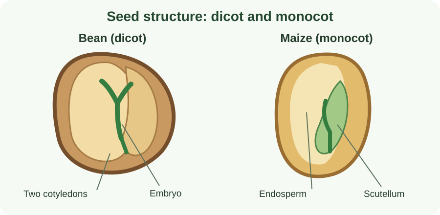
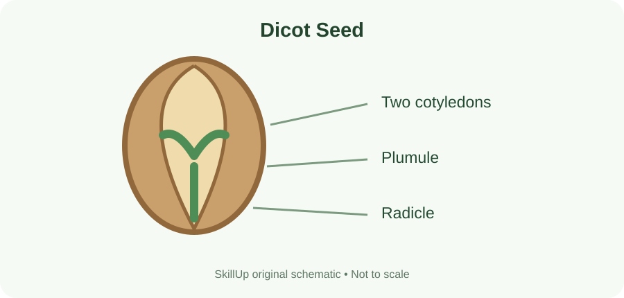
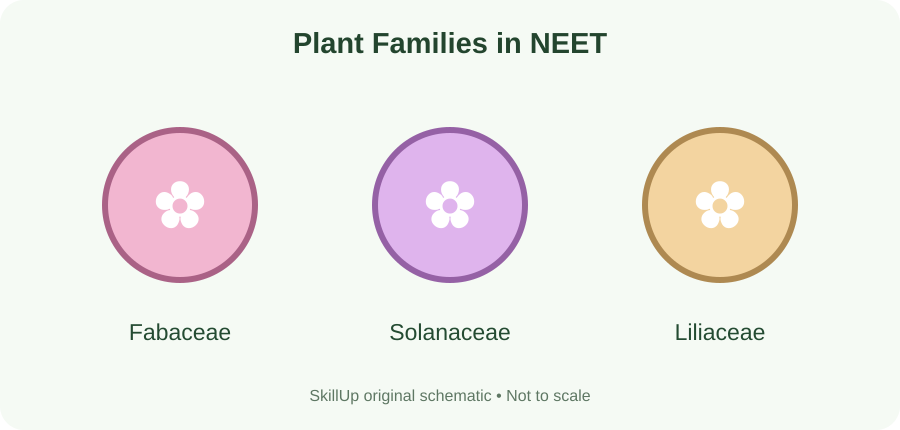
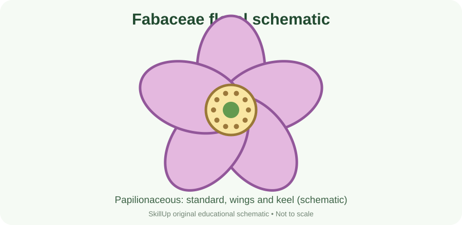
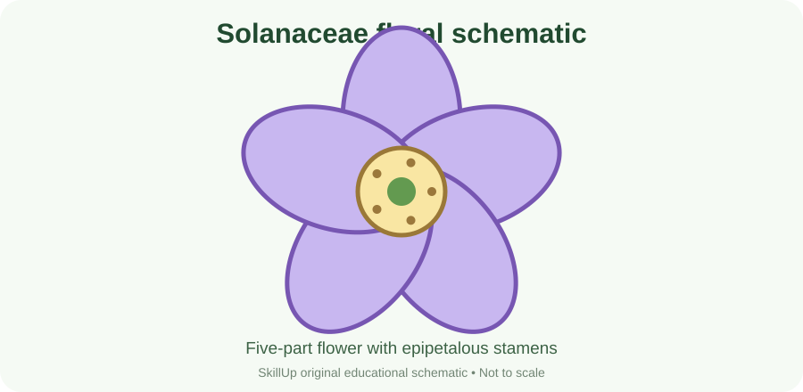

1. Living organisms
Living systems have cellular organisation, metabolism and the ability to sense and respond to their surroundings. No single visible trait is sufficient on its own.
Review the key questions, correct answers and explanations. Recall each idea before revealing it in your mind.
Living systems have cellular organisation, metabolism and the ability to sense and respond to their surroundings. No single visible trait is sufficient on its own.
All living organisms are made of one or more cells. Cells are the basic structural and functional units of life.
All chemical reactions in living systems together constitute metabolism. Anabolism builds complex molecules; catabolism breaks them down.
Living organisms generally grow from within, through cell division or enlargement. Non-living crystals can grow by external deposition.
Reproduction produces new individuals, but it is not universal for every living individual: mules and sterile worker bees do not reproduce.
Living organisms can sense and respond to physical, chemical or biological stimuli, such as light, touch, temperature and gravity.
| Property | Important exam distinction |
|---|---|
| Growth | Occurs in living organisms, but also in non-living crystals; not a defining feature by itself. |
| Reproduction | Not shown by all individual living organisms; cannot alone define life. |
| Metabolism | A defining feature of living systems; isolated metabolic reactions may occur in vitro without making the test tube living. |
| Consciousness | Awareness of surroundings and response to stimuli are key characteristics of living organisms. |
Some living individuals, such as mules and sterile worker bees, cannot reproduce.
Crystals grow through external deposition, while living organisms typically grow internally by cell division or enlargement.
Anabolism builds molecules; catabolism breaks molecules down. Both are components of metabolism.
Mimosa pudica leaves fold in response to touch.
Biodiversity is the variety and variability of living organisms, including diversity within species, between species and among ecosystems.
Variation in genes within a species or among its populations. Examples include different rice varieties and genetic variation in mango.
Variety of species in an area. Species richness is the number of species; evenness describes how individuals are distributed among them.
Variety of habitats and ecosystems, such as forests, wetlands, deserts and grasslands.
Species richness generally increases from the poles towards the tropics. Larger sampled areas usually contain more species.
In-situ conservation protects species in their natural habitats; ex-situ conservation protects them outside natural habitats, such as in seed banks and botanical gardens.
| Level | What varies? | Example |
|---|---|---|
| Genetic | Genes within a species | Rice varieties |
| Species | Species present in an area | Birds, insects and plants in a forest |
| Ecosystem | Habitats and ecological communities | Wetland versus grassland |
Genetic diversity, species diversity and ecosystem diversity.
Richness counts species; evenness describes their relative abundances.
In-situ: national park. Ex-situ: seed bank.
Tropics, in the broad latitudinal diversity gradient.
Millions of organisms differ in form, habitat and function. Grouping them systematically makes identification, study and communication easier.
Classification helps recognise an organism by comparing its diagnostic characteristics with those of known groups.
Scientific names reduce confusion caused by local and common names. Each species is assigned a standard binomial name.
Modern classification uses shared characteristics and evolutionary evidence to understand relationships among organisms.
Organisms are arranged into nested taxonomic ranks: species, genus, family, order, class, phylum or division, and kingdom.
Taxonomy deals with identification, nomenclature and classification. Systematics additionally examines evolutionary relationships.
| Term | Meaning |
|---|---|
| Identification | Determining what an organism is |
| Nomenclature | Assigning a standard scientific name |
| Classification | Arranging organisms into groups |
| Systematics | Studying organismal diversity and evolutionary relationships |
To organise biological diversity, support identification, enable consistent naming and understand relationships.
Species.
Systematics also considers evolutionary relationships among organisms.
Species → Genus → Family.
Species is the fundamental unit of classification. It groups organisms with important shared characteristics and a distinct identity.
For many sexually reproducing organisms, a species consists of natural populations that can interbreed and are reproductively isolated from other such groups.
Barriers to successful gene exchange help keep species distinct. They may act before fertilisation or after a hybrid forms.
Shared structural features help identify and distinguish species, especially when reproductive information is unavailable.
The biological species concept is difficult to apply to asexual organisms, fossils and some populations that hybridise.
A genus contains one or more closely related species. In Mangifera indica, Mangifera is the genus and indica the specific epithet.
| Concept | Key idea |
|---|---|
| Species | Basic taxonomic category |
| Genus | Group of closely related species |
| Biological species | Interbreeding populations reproductively isolated from others |
| Morphological species | Identified using diagnostic structural traits |
Species.
Barriers restrict successful interbreeding or gene exchange between populations.
Most bacteria reproduce asexually, so interbreeding-based criteria do not apply in the usual way.
Mangifera.
A taxonomic hierarchy is a sequence of nested categories used to classify organisms from the most specific group to the broadest.
The fundamental taxonomic category. Closely related individuals are placed in the same species; example: Mangifera indica.
A genus groups closely related species; a family contains related genera. Solanum is a genus in family Solanaceae.
Related families form an order, and related orders form a class. For mango, the order is Sapindales and the class is Magnoliopsida in a traditional scheme.
Related plant classes are grouped into a division; divisions are grouped into a kingdom. Mango belongs to kingdom Plantae.
Lower categories generally share more characteristics. Higher categories include more organisms but have fewer traits common to all members.
| Rank | Example: Mango |
|---|---|
| Species | Mangifera indica |
| Genus | Mangifera |
| Family | Anacardiaceae |
| Order | Sapindales |
| Class | Magnoliopsida (traditional classification) |
| Division | Magnoliophyta (traditional classification) |
| Kingdom | Plantae |
Plant classifications may use different modern clade names; the rank sequence shown here is the conventional NEET hierarchy.
Species → Genus → Family → Order → Class → Division/Phylum → Kingdom.
Family. It contains one or more related genera.
They generally decrease as broader groups contain more diverse organisms.
Anacardiaceae.
A taxonomic category is a rank such as genus or family. A taxon is an actual group placed at that rank, such as Solanum (genus) or Solanaceae (family).
Species is the basic category. It includes organisms with important common features; Mangifera indica is the species name of mango.
A genus groups closely related species. Panthera includes lion (P. leo) and tiger (P. tigris).
A family groups related genera. Solanum, Petunia and Datura are genera placed in Solanaceae.
An order includes related families, while a class includes related orders. As rank increases, the group becomes broader.
Related classes form a division in traditional plant classification or a phylum in animal classification. Kingdom is the broadest of these seven principal ranks.
| Category (rank) | Example of a taxon |
|---|---|
| Species | Mangifera indica |
| Genus | Mangifera |
| Family | Anacardiaceae |
| Order | Sapindales |
| Class | Magnoliopsida (traditional) |
| Division | Magnoliophyta (traditional) |
| Kingdom | Plantae |
Solanaceae is a taxon; family is its category.
Family.
Species.
They generally decrease as the groups become broader.
Each species has a genus name followed by a specific epithet. Example: Mangifera indica (mango).
Capitalise the genus, use lowercase for the specific epithet, and italicise both when printed. Underline each word separately when handwritten.
Scientific names provide a standard way to identify organisms across languages and regions.
Carolus Linnaeus popularised the binomial naming system. Modern names follow internationally agreed nomenclature codes.

The genus name.
Underline the genus and specific epithet separately.
Carolus Linnaeus.
A collection of dried, pressed and labelled plant specimens stored on sheets for reference and identification.
Maintain living plant collections with scientific labels for study, conservation and education.
Preserve specimens in jars, as dry preparations or as skeletons for scientific study.
Identify organisms through a sequence of contrasting character choices, often presented as paired statements (couplets).

Herbarium.
Taxonomic key.
A detailed account of a particular taxonomic group.
A collection of dried, pressed and preserved plant specimens mounted on labelled sheets for identification and reference.
Collect → press → dry → mount → label → store. Specimens are protected from moisture and pests.
Usually records scientific name, collection locality, date, collector and other field details.
Supports plant identification, classification, biodiversity records and comparison with reference specimens.

No. They are preserved, usually dried and pressed specimens.
Scientific name, locality and collection date (collector is also commonly recorded).
It provides reference specimens for plant identification, classification and research.
Botanical gardens grow and maintain living plants for identification, education, research and conservation.
Plants are commonly labelled with scientific names and family details, helping visitors recognise different taxa.
Living collections can help protect threatened plants outside their natural habitats: ex-situ conservation.
Indian Botanic Garden, Howrah, and Royal Botanic Gardens, Kew, are well-known examples.

Living plants.
Ex-situ conservation.
Indian Botanic Garden, Howrah, or Royal Botanic Gardens, Kew.
A taxonomic aid used to identify organisms by choosing between contrasting characteristics.
Each pair of contrasting statements is a couplet; each individual statement is a lead.
Observe a character → choose the matching lead → follow the next step until an organism is identified.
Indented keys and bracketed keys present paired choices in different layouts. Both help narrow identification.
Illustrative branching key, not a complete species-identification key.
A pair of contrasting statements in a taxonomic key.
One statement of a couplet.
To identify an organism using observable characteristics.
Prokaryotic, usually unicellular organisms. Example: bacteria and cyanobacteria.
Mostly unicellular eukaryotes. Examples: Amoeba, Euglena and diatoms.
Eukaryotic heterotrophs that absorb nutrients; most have chitinous cell walls. Example: mushroom.
Mostly multicellular, photosynthetic eukaryotes with cellulose cell walls. Example: mango plant.
Multicellular eukaryotic heterotrophs that ingest food; cells lack cell walls. Example: elephant.
Proposed the five-kingdom system in 1969 using cell structure, body organisation, nutrition, reproduction and phylogenetic relationships.
R. H. Whittaker, in 1969.
Monera.
Fungi.
Prokaryotic organisms: no membrane-bound nucleus or organelles.
Cocci = spherical; bacilli = rods; vibrios = comma-shaped; spirilla = spiral.
Nostoc and Anabaena are photosynthetic; some cells called heterocysts fix nitrogen.
Methanogens live in anaerobic habitats; Mycoplasma lacks a cell wall.
Autotrophic or heterotrophic; bacteria commonly divide by binary fission.
Schematic revision illustration (not a microscope photo).
Illustrative symbols; not specimen photographs.
Mycoplasma.
A specialised nitrogen-fixing cell in some cyanobacteria.
Comma-shaped.
Mostly unicellular eukaryotes, commonly found in aquatic habitats.
Diatoms have silica-rich walls; deposits form diatomaceous earth.
Two flagella; some, such as Gonyaulax, can cause red tides.
Euglena has a pellicle and can photosynthesise in light.
Amoeba uses pseudopodia; Paramecium uses cilia; slime moulds form spores.
Schematic revision illustration (not a microscope photo).
Illustrative symbols; not specimen photographs.
Diatoms.
A flexible pellicle.
Certain dinoflagellates.
Eukaryotic absorptive heterotrophs with chitin-containing cell walls.
Thread-like hyphae form a mycelium; yeast is unicellular.
Saprophytic, parasitic or symbiotic; fungi digest food externally.
Asexual spores include conidia and sporangiospores; sexual spores vary by group.
Phycomycetes, ascomycetes, basidiomycetes and deuteromycetes (traditional grouping).
Schematic revision illustration (not a microscope photo).
Illustrative symbols; not specimen photographs.
A network of hyphae.
Yeast.
Chitin.
A stable symbiotic association of a fungus and a photosynthetic alga or cyanobacterium.
Mycobiont = fungal partner; photobiont = alga or cyanobacterium.
Photobiont supplies photosynthate; fungus provides protection and absorbs water and minerals.
Lichens can colonise rocks and bark; some help weather rock surfaces.
Many lichens are sensitive to air pollution, especially sulphur dioxide.
Schematic revision illustration (not a microscope photo).
Illustrative symbols; not specimen photographs.
The fungal partner.
The photobiont.
Many are sensitive to atmospheric pollution.
Acellular infectious agents: viruses have genetic material inside a protein coat; viroids are naked infectious RNA.
A virus contains either DNA or RNA, surrounded by a capsid made of capsomeres.
Viruses reproduce only inside living host cells.
Viroids are small infectious RNA molecules without a protein coat; potato spindle tuber disease is an example.
Illustrative symbols, not specimen photographs.
A protein capsid.
No.
Bacteria.
Mostly aquatic, photosynthetic, thalloid organisms with simple body organisation.
Chlorophyceae contain chlorophyll a and b; reserve food is mainly starch.
Phaeophyceae contain fucoxanthin; reserve food includes laminarin and mannitol.
Rhodophyceae contain phycoerythrin; reserve food is floridean starch.
Illustrative symbols, not specimen photographs.
Fucoxanthin.
Floridean starch.
Spirogyra.
Small non-vascular land plants with a dominant gametophyte; water is needed for fertilisation.
The green, haploid gametophyte is the dominant independent plant body.
Flagellated male gametes swim through water to the egg in the archegonium.
The diploid sporophyte remains attached to and dependent on the gametophyte.
Illustrative symbols, not specimen photographs.
The gametophyte.
For motile male gametes to reach the egg.
Sphagnum.
Seedless vascular plants with a dominant sporophyte and spore-based reproduction.
True roots, stems and leaves contain xylem and phloem.
Spores form by meiosis; the small gametophyte bears antheridia and archegonia.
Motile male gametes usually require water to reach the egg.
Illustrative symbols; not specimen photographs.
Diploid sporophyte.
No; they reproduce by spores.
Selaginella.
Seed plants with ovules exposed rather than enclosed within an ovary.
Ovules are not enclosed in an ovary; true fruits are absent.
Male and female reproductive structures commonly occur as strobili or cones.
Pollen transfer does not require free water for swimming sperm in most gymnosperms.
Illustrative symbols; not specimen photographs.
Ovules are not enclosed within an ovary.
Pinus.
No.
Flowering seed plants with ovules enclosed in an ovary and seeds enclosed by fruit.
Stamens produce pollen; carpels enclose ovules.
One sperm fuses with egg; the other fuses with the central cell, usually producing triploid endosperm.
The ovary usually develops into a fruit after fertilisation.
Illustrative symbols; not specimen photographs.
The ovary.
Syngamy plus fusion of the second sperm with the central cell.
Maize.
Two major flowering-plant groups traditionally compared by cotyledons, leaf venation and roots.
One cotyledon; often parallel venation, fibrous roots and floral parts in threes.
Two cotyledons; often reticulate venation, taproots and floral parts in fours or fives.
Monocot vascular bundles are often scattered and closed; dicot bundles usually form a ring and are open.
Illustrative symbols; not specimen photographs.
One.
Reticulate venation.
Monocots.
Photosynthetic pigments help distinguish green, brown and red algal groups.
Chlorophyll a and b predominate; chlorophyll reflects green light.
Chlorophyll a and c plus fucoxanthin, a brown xanthophyll.
Chlorophyll a and phycobilins, notably phycoerythrin; many also contain phycocyanin.
Illustrative symbols; not specimen photographs.
Fucoxanthin.
Phycoerythrin.
Chlorophyll a.
Algae supply food, industrial hydrocolloids and ecological services.
Extracted from red algae such as Gelidium and Gracilaria; used in culture media and foods.
Algin comes from brown algae; carrageenan from red algae.
Aquatic algae fix carbon, release oxygen and support food webs.
Illustrative symbols; not specimen photographs.
Red algae, e.g. Gelidium and Gracilaria.
Brown algae.
They are major aquatic primary producers.
The haploid gametophyte is dominant; the diploid sporophyte depends on it.
Produces sperm in antheridia and eggs in archegonia.
Swimming sperm need water to reach the egg, producing a diploid zygote.
The attached sporophyte produces haploid spores by meiosis.
Simplified cycle schematic; arrows show major stages.
Illustrative symbols; not specimen photographs.
Gametophyte.
Sporophyte by meiosis.
Motile sperm swim to the egg.
The vascular diploid sporophyte is dominant; spores grow into small gametophytes.
The main fern plant bears sporangia that form haploid spores by meiosis.
A spore grows into a prothallus bearing antheridia and archegonia.
Water allows motile sperm to reach the egg; the zygote forms a new sporophyte.
Simplified cycle schematic; arrows show major stages.
Illustrative symbols; not specimen photographs.
Prothallus.
Sporophyte.
Selaginella.
The diploid seed-bearing sporophyte is dominant; gametophytes are highly reduced.
Male structures form pollen; ovulate structures bear exposed ovules.
Pollen reaches the ovule, and a pollen tube commonly delivers male gametes.
After fertilisation, the embryo develops in a seed not enclosed in a fruit.
Simplified cycle schematic; arrows show major stages.
Illustrative symbols; not specimen photographs.
Diploid sporophyte.
A seed formed from an ovule not enclosed in an ovary.
Pinus.
Flowering plants have a dominant diploid sporophyte and highly reduced gametophytes.
Anthers produce pollen grains; ovules contain embryo sacs.
One sperm fuses with the egg to form a zygote; another fuses with the central cell to form endosperm.
The ovule becomes a seed; the ovary usually becomes a fruit.
Simplified learning diagram.
Illustrative symbols; not specimen photographs.
Diploid sporophyte.
Usually the ovary.
Endosperm, typically triploid.
Plants alternate between haploid gametophyte and diploid sporophyte phases.
Produces gametes by mitosis; fertilisation creates the diploid zygote.
Produces haploid spores through meiosis.
Bryophytes: gametophyte dominant; ferns and seed plants: sporophyte dominant.
Simplified learning diagram.
Illustrative symbols; not specimen photographs.
The sporophyte by meiosis.
Gametophyte.
Sporophyte.
Compare plant groups by vascular tissue, seeds, flowers and dominant generation.
Algae are largely aquatic thalloid forms; bryophytes lack true vascular tissue.
Vascular, seedless plants with dominant sporophytes.
Gymnosperms have exposed ovules; angiosperms have ovules enclosed in an ovary.
Simplified learning diagram.
Illustrative symbols; not specimen photographs.
Pteridophytes.
Gymnosperms.
Angiosperms.
Distinguish major plant groups using vascular tissue, seeds and reproductive structures.
Non-vascular; gametophyte dominant; fertilisation needs water.
Vascular but seedless; sporophyte dominant; reproduce by spores.
Gymnosperms have naked seeds; angiosperms enclose ovules within ovaries.
Simplified learning summary; arrows indicate study order, not necessarily evolutionary ancestry.
Illustrative symbols; not specimen photographs.
Pteridophytes.
Gymnosperms.
Angiosperms.
Algae reproduce vegetatively, asexually and sexually.
Fragmentation produces new individuals from pieces of the thallus.
Many algae form spores, including motile zoospores.
Gamete fusion may be isogamous, anisogamous or oogamous.
Simplified learning summary; arrows indicate study order, not necessarily evolutionary ancestry.
Illustrative symbols; not specimen photographs.
A thallus fragment develops into a new individual.
A motile asexual spore.
Fusion of a large non-motile egg with a smaller male gamete.
Bryophytes reproduce by vegetative propagules and sexually on the gametophyte.
Fragmentation and gemmae can form new gametophytes.
Antheridia produce motile sperm; archegonia contain eggs; water enables fertilisation.
A dependent sporophyte produces haploid spores by meiosis.
Simplified learning summary; arrows indicate study order, not necessarily evolutionary ancestry.
Illustrative symbols; not specimen photographs.
Vegetative reproductive bodies, notably in Marchantia.
Archegonia.
The sporophyte by meiosis.
Seedless vascular plants form spores in sporangia; their gametophytes produce gametes.
Sporangia on the diploid sporophyte produce haploid spores through meiosis.
Spores germinate into a small prothallus in many ferns, with antheridia and archegonia.
Motile sperm require water to reach the egg; the zygote develops into a sporophyte.
Simplified study diagram; arrows indicate a sequence or comparison as appropriate.
Illustrative symbols; not specimen photographs.
In sporangia.
Prothallus.
Selaginella and Salvinia.
Gymnosperms reproduce using pollen and ovules, typically borne on reproductive cones or similar structures.
Microsporangia produce microspores that develop into pollen grains.
Megasporangia within exposed ovules produce megaspores; the female gametophyte develops within the ovule.
Pollination precedes fertilisation; the ovule becomes a naked seed without a surrounding fruit.
Simplified study diagram; arrows indicate a sequence or comparison as appropriate.
Illustrative symbols; not specimen photographs.
A pollen grain (male gametophyte).
The fertilised ovule.
No.
Flowering plants vary widely in form, habitat and floral structure, including monocot and eudicot lineages.
Typically one cotyledon, parallel venation and floral parts in multiples of three.
Typically two cotyledons, net venation and floral parts often in fours or fives.
Angiosperms include herbs, shrubs, trees, climbers, aquatics and epiphytes.
Simplified study diagram; arrows indicate a sequence or comparison as appropriate.
Illustrative symbols; not specimen photographs.
One.
Sunflower.
No; they include herbs, shrubs, trees and other forms.
Bryophytes support soil development, water retention and horticultural applications.
Sphagnum accumulates as peat under waterlogged conditions; peat has been used as fuel and a growing medium.
Sphagnum absorbs and holds large quantities of water, useful in horticulture.
Mosses help colonise bare surfaces, retain moisture and reduce soil erosion.
Illustrative symbols; not specimen photographs.
Sphagnum.
It retains water.
They retain moisture and help stabilise surfaces.
Ferns and their relatives are valued in agriculture, ornamentals and ecology.
Azolla hosts nitrogen-fixing cyanobacteria and is used as green manure in rice cultivation.
Ferns such as Adiantum and Nephrolepis are grown for decorative foliage.
Many pteridophytes contribute to ground cover, habitat structure and soil protection.
Illustrative symbols; not specimen photographs.
Azolla.
Biological nitrogen fixation.
Adiantum or Nephrolepis.
Gymnosperms supply wood, pulp, resins, foods and important medicinal compounds.
Conifers such as Pinus are sources of softwood used in construction and paper.
Pinus resin yields products including rosin and turpentine.
Taxus is a source of paclitaxel; some Pinus species yield edible pine nuts.
Illustrative symbols; not specimen photographs.
Pinus.
Taxus.
Softwood.
Flowering plants supply most human food crops as well as fibres, medicines, oils and timber.
Rice, wheat and maize provide cereals; pulses, fruits and vegetables supply nutrition.
Cotton provides textile fibre; sunflower, mustard and groundnut yield edible oils.
Cinchona is a source of quinine; teak and other hardwood trees supply timber.
Illustrative symbols; not specimen photographs.
Rice and wheat (maize also qualifies).
Cotton (Gossypium).
Cinchona.
Plant tissues are groups of cells with common origin and function, broadly divided into meristematic and permanent tissues.
Actively dividing cells produce new tissues and enable plant growth.
Parenchyma, collenchyma and sclerenchyma mainly provide storage, support and other functions.
Xylem conducts water and minerals; phloem translocates organic food.
Illustrative symbols; not specimen photographs.
Meristematic tissue.
Parenchyma, collenchyma and sclerenchyma.
Phloem.
Meristems contain actively dividing, relatively undifferentiated cells responsible for primary and secondary growth.
Located at root and shoot tips; increases length during primary growth.
Occurs near nodes or leaf bases in some plants, especially grasses; enables regrowth.
Vascular cambium and cork cambium increase girth during secondary growth.
Illustrative symbols; not specimen photographs.
Root and shoot tips.
Intercalary meristem.
Lateral meristem.
Permanent tissues arise when meristematic cells differentiate and become specialised for plant functions.
Living, usually thin-walled cells involved in storage, photosynthesis and repair.
Collenchyma provides flexible support; sclerenchyma provides rigid strength.
Complex permanent tissues xylem and phloem transport water and food.
Illustrative symbols; not specimen photographs.
Parenchyma.
Collenchyma.
Sclerenchyma.
Parenchyma is a simple permanent tissue of living, generally thin-walled cells, often with intercellular spaces.
Stores starch, water and other substances in organs such as tubers.
Parenchyma with chloroplasts performs photosynthesis in green tissues.
Large air spaces facilitate buoyancy and gas exchange in aquatic plants.
Illustrative symbols; not specimen photographs.
Generally living.
Chlorenchyma.
Parenchyma with large air spaces.
Collenchyma is a living simple permanent tissue that provides flexible mechanical support to growing organs.
Primary cell walls are often thickened at the corners, rich in cellulose and pectin.
Supports young stems and petioles while allowing bending and growth.
Commonly occurs beneath the epidermis of dicot stems and in leaf stalks.
Illustrative symbols; not specimen photographs.
Yes.
Flexible mechanical support.
Beneath the epidermis in young dicot stems and petioles.
Sclerenchyma is a strengthening simple permanent tissue with thick, commonly lignified secondary walls; cells are generally dead at maturity.
Thick lignified walls provide rigidity and protection.
Long, narrow cells contribute tensile strength in plant organs.
Shorter, variably shaped hard cells occur in nutshells and gritty pear tissue.
Illustrative symbols; not specimen photographs.
Fibres and sclereids.
They have thick, commonly lignified secondary walls.
Sclereids.
Xylem is a complex permanent tissue that conducts water and dissolved minerals and provides mechanical support.
Tracheids and vessel elements are dead at maturity and conduct water through lignified walls.
Xylem fibres provide strength; xylem parenchyma is living and stores food.
Water moves mainly from roots toward aerial parts, driven by transpiration pull.
Illustrative symbols; not specimen photographs.
Tracheids and vessel elements.
Xylem parenchyma.
Transpiration pull.
Phloem is a complex permanent tissue that transports sugars and other organic solutes from sources to sinks.
Sieve tube elements conduct assimilates through sieve plates; they lack a nucleus at maturity.
Living companion cells support sieve tube metabolism and help with phloem loading and unloading.
Phloem parenchyma stores materials; phloem fibres give mechanical support.
Illustrative symbols; not specimen photographs.
Mainly organic solutes such as sucrose.
They support sieve tube function.
An organ exporting assimilates, such as a mature photosynthetic leaf.
Roots typically develop from the radicle, anchor plants and absorb water and mineral nutrients.
Primary root persists with lateral branches; typical of many dicots, e.g. mustard.
Many similarly sized roots arise near the stem base; common in monocots such as wheat.
Roots develop from parts other than the radicle, as in banyan prop roots.
Illustrative symbols; not specimen photographs.
Radicle.
Fibrous root system.
Roots arising from parts other than the radicle.
A typical young root shows an outer epiblema, cortex, endodermis, pericycle and central vascular tissues.
Epiblema bears root hairs; the cortex is mainly parenchymatous.
Casparian strips in endodermal cells regulate apoplastic water entry into the stele.
Xylem and phloem occur in alternating radial strands; protoxylem is exarch.

Epiblema (rhizodermis).
Endodermis.
Exarch.
Roots may be modified for food storage, mechanical support, respiration or other special functions.
Carrot and radish have swollen taproots; sweet potato has tuberous adventitious roots.
Banyan prop roots descend from branches; maize stilt roots arise from lower stem nodes.
Pneumatophores in mangroves such as Avicennia project above waterlogged soil.

Mechanical support.
Pneumatophores.
Modified adventitious root.
The stem develops from the plumule, bears nodes and internodes, and supports leaves, branches and reproductive organs.
Nodes bear leaves and axillary buds; internodes lie between successive nodes.
Terminal and axillary buds contribute to shoot growth and branching.
Stems position leaves and flowers and conduct water, minerals and sugars.

Plumule.
The region between two successive nodes.
In the axil of a leaf.
The primary stem has an epidermis, ground tissues and vascular bundles; dicot and monocot stems differ in bundle arrangement.
Vascular bundles typically form a ring, with cambium between xylem and phloem (open bundles).
Numerous vascular bundles are scattered in ground tissue and are usually closed.
Primary stem xylem is typically endarch, with protoxylem toward the pith.

In a ring.
Closed.
Endarch.
Stems may be modified for storage, vegetative propagation, support, protection and photosynthesis.
Rhizomes (ginger), tubers (potato), corms and bulbs store food and help perennation.
Runners, stolons, suckers and offsets enable vegetative propagation.
Stem tendrils climb; thorns protect; phylloclades carry out photosynthesis.

A modified stem.
Rhizome.
A modified green stem that performs photosynthesis.
A typical leaf consists of leaf base, petiole and lamina, and is the main photosynthetic organ of many plants.
Leaf base attaches to the stem; petiole holds the lamina; veins conduct and support.
A simple leaf has an undivided lamina; a compound leaf has distinct leaflets.
Venation, margin, apex, shape and phyllotaxy aid identification.

Leaf base, petiole and lamina.
No.
Neem.
The leaf epidermis protects the lamina, mesophyll performs photosynthesis, and veins transport materials.
Upper and lower epidermis protect the leaf; stomata permit gas exchange.
Palisade cells are chloroplast-rich; spongy mesophyll contains air spaces in dorsiventral leaves.
Xylem conducts water and phloem carries sugars; xylem usually faces the upper leaf surface.

Palisade mesophyll.
Guard cells.
Xylem.
Leaves may change shape and function for climbing, defence, food storage or insect capture.
In pea, leaf parts are modified into tendrils that help climbing.
In many cacti, leaves are modified into spines that reduce herbivory and water loss.
Fleshy leaves store water; pitcher plant leaves are modified to capture insects.

Climbing and support.
Yes.
Nepenthes.
Secondary growth increases the girth of many dicot stems and roots through activity of lateral meristems.
Produces secondary xylem toward the inside and secondary phloem toward the outside.
Forms cork (phellem) outward and phelloderm inward, making the periderm.
Seasonal differences in secondary xylem production can create visible growth rings.

Vascular cambium.
Outside the vascular cambium.
Cork (phellem).
Phyllotaxy is the arrangement of leaves on the stem or branch.
One leaf arises at each node, as in China rose, mustard and sunflower.
Two leaves arise at each node, as in guava and Calotropis.
Three or more leaves arise at a node, as in Alstonia.

Arrangement of leaves on a stem or branch.
Opposite.
Three or more.
Venation is the arrangement of veins and veinlets in the leaf lamina.
Veins form a network, commonly in dicot leaves such as mango.
Veins run approximately parallel, commonly in monocot leaves such as grasses.
Veins contain vascular tissues for transport and also support the leaf blade.

Arrangement of veins and veinlets in a leaf.
Parallel.
Veins and veinlets.
Inflorescence is the arrangement of flowers on a floral axis; growth of the axis distinguishes racemose and cymose types.
The main axis continues to grow; flowers are usually arranged in acropetal succession.
The main axis ends in a flower; flowers generally show basipetal succession.
Raceme, spike, umbel and capitulum are common racemose forms; monochasial and dichasial cymes are cymose forms.

No; it continues growing.
A flower.
Acropetal.
In racemose inflorescences, the main floral axis remains indeterminate; flowers usually develop in acropetal order.
The main axis does not terminate in a flower and can continue producing lateral flowers.
Older flowers occur toward the base; younger flowers are near the apex.
Raceme (mustard), spike (Achyranthes), umbel (coriander), capitulum (sunflower).
No, it continues growing.
Toward the apex.
Raceme.
In cymose inflorescences, the main floral axis terminates in a flower, making growth determinate.
The terminal flower opens first and limits further extension of that axis.
Older flowers occur near the apex or centre; younger flowers develop toward the base or periphery.
Monochasial: one lateral branch; dichasial: two; polychasial: more than two.

A flower.
The terminal flower.
Two.
A typical angiosperm flower bears four whorls on the thalamus: calyx, corolla, androecium and gynoecium.
Calyx (sepals) protects the bud; corolla (petals) often attracts pollinators.
Androecium comprises stamens, each typically with a filament and anther.
Gynoecium comprises carpels with stigma, style and ovary containing ovules.

Calyx, corolla, androecium and gynoecium.
Anther.
Inside the ovary.
Aestivation describes how sepals or petals are arranged in the floral bud relative to members of the same whorl.
Valvate margins touch without overlapping; twisted petals each overlap the next in one direction.
Petal margins overlap irregularly, without a uniform direction.
In pea, the large standard overlaps wings, which overlap the keel.

Arrangement of sepals or petals in a floral bud.
Vexillary.
Adjacent margins touch without overlapping.
Androecium is the male reproductive whorl, comprising stamens with anthers and filaments.
A typical stamen consists of filament and anther; anther pollen sacs form pollen grains.
Monadelphous stamens have united filaments in one bundle; diadelphous in two bundles.
Epipetalous stamens attach to petals, as in brinjal; epiphyllous stamens attach to perianth, as in lily.

Anther and filament.
Filaments united in one bundle.
Pollen grains.
Gynoecium is the female reproductive whorl, formed by one or more carpels with stigma, style and ovary.
Stigma receives pollen; style connects stigma to ovary; ovary encloses ovules.
Apocarpous = free carpels; syncarpous = fused carpels.
Ovules generally become seeds and the ovary usually develops into the fruit.

Stigma, style and ovary.
Two or more carpels fused together.
A seed.
Placentation is the arrangement of ovules on the placenta within the ovary.
Marginal: ovules along ventral suture of a single carpel (pea). Axile: ovules attached to central axis in multilocular ovary (tomato).
Parietal: ovules attached to inner ovary wall (mustard). Free-central: central column without septa (Dianthus).
One or few ovules arise from ovary base, as in sunflower.

Marginal.
To a central axis in a multilocular ovary.
Basal.
A fruit generally develops from a ripened ovary after fertilisation and protects and disperses seeds.
Fruit wall develops from the ovary wall and may differentiate into epicarp, mesocarp and endocarp.
Mango is a drupe with a stony endocarp; tomato is a berry.
Legumes dehisce along sutures; caryopsis is characteristic of cereals such as wheat.

Pericarp.
Drupe.
Fruit development without fertilisation.
A seed is a mature ovule containing an embryo, protective seed coat and often stored food.
Integuments become the protective testa and tegmen; the micropyle remains as a small pore.
Bean embryo typically has two cotyledons and a plumule and radicle.
Maize has a single cotyledon (scutellum) and usually persistent endosperm.

The ovule.
Two.
Scutellum.
A typical dicot embryo contains two cotyledons attached to an embryonic axis with plumule and radicle.
Two cotyledons store or absorb nutrients; bean and pea are typically non-endospermic at maturity.
Plumule develops into shoot; radicle develops into primary root.
Testa and tegmen protect the embryo; hilum marks attachment and micropyle allows water entry.

Two.
Radicle.
Yes.
Maize and many other cereals have one cotyledon (scutellum), a persistent endosperm and protective embryonic sheaths.
The single cotyledon lies adjacent to the endosperm and absorbs nutrients during germination.
Starchy endosperm stores food; an outer aleurone layer is protein-rich.
Coleoptile protects the plumule and coleorhiza protects the radicle.

Scutellum.
Coleoptile.
Coleorhiza.
Recognise important angiosperm families through floral symmetry, ovary position, stamens, placentation and fruit type.
Zygomorphic papilionaceous corolla, usually 9+1 diadelphous stamens and legume fruit.
Actinomorphic pentamerous flowers, five epipetalous stamens, bicarpellary superior ovary and berry/capsule.
Trimerous flowers with six tepals, six epiphyllous stamens and tricarpellary superior ovary.

Fabaceae.
Solanaceae.
Six.
Fabaceae (pea family) typically has a zygomorphic papilionaceous corolla, diadelphous stamens and a superior monocarpellary ovary.
Five petals: one standard, two wings and two keel petals; vexillary aestivation.
Usually ten stamens, with nine united and one free (diadelphous).
Monocarpellary superior ovary with marginal placentation; fruit a legume.

The standard overlaps wings, which overlap the keel.
Nine united stamens and one free.
Legume.
Solanaceae (potato family) commonly has actinomorphic pentamerous flowers, epipetalous stamens and a bicarpellary superior ovary.
Typically actinomorphic, bisexual, pentamerous and hypogynous.
Five stamens, usually epipetalous (attached to the corolla).
Bicarpellary syncarpous superior ovary, usually axile placentation; berry or capsule.

Stamens attached to petals.
Two, fused.
Axile.
Liliaceae (lily family) is typically trimerous, with six tepals, six epiphyllous stamens and a tricarpellary superior ovary.
Six tepals in two whorls of three, often petaloid.
Six epiphyllous stamens, arranged as 3 + 3.
Three fused carpels, superior ovary, axile placentation; capsule or berry.

Six, arranged 3 + 3.
Stamens attached to the perianth.
Three fused carpels.
Plant tissue systems are epidermal, ground and vascular.
Recognise the defining structures, their function and examples of tissue systems.
Plant tissue systems are epidermal, ground and vascular.
Epidermis, cuticle, stomata and epidermal appendages protect and regulate exchange.
Recognise the defining structures, their function and examples of epidermal tissue system.
Epidermis, cuticle, stomata and epidermal appendages protect and regulate exchange.
Ground tissue includes cortex, pith and mesophyll, often rich in parenchyma.
Recognise the defining structures, their function and examples of ground tissue system.
Ground tissue includes cortex, pith and mesophyll, often rich in parenchyma.
Xylem and phloem transport water, minerals and organic solutes.
Recognise the defining structures, their function and examples of vascular tissue system.
Xylem and phloem transport water, minerals and organic solutes.
Radial xylem and phloem with relatively few xylem arms; pith is often small.
Recognise the defining structures, their function and examples of dicot root t.s..
Radial xylem and phloem with relatively few xylem arms; pith is often small.
Polyarch radial vascular tissue and a large pith are common.
Recognise the defining structures, their function and examples of monocot root t.s..
Polyarch radial vascular tissue and a large pith are common.
Collateral open vascular bundles form a ring around the pith.
Recognise the defining structures, their function and examples of dicot stem t.s..
Collateral open vascular bundles form a ring around the pith.
Closed vascular bundles are scattered in ground tissue.
Recognise the defining structures, their function and examples of monocot stem t.s..
Closed vascular bundles are scattered in ground tissue.
Typical dicot leaf has palisade tissue toward the upper surface and spongy tissue below.
Recognise the defining structures, their function and examples of dorsiventral leaf.
Typical dicot leaf has palisade tissue toward the upper surface and spongy tissue below.
Typical monocot leaf has similar surfaces and may contain bulliform cells.
Recognise the defining structures, their function and examples of isobilateral leaf.
Typical monocot leaf has similar surfaces and may contain bulliform cells.
Seasonal variation in secondary xylem forms growth rings in many woody plants.
Recognise the defining structures, their function and examples of annual rings.
Seasonal variation in secondary xylem forms growth rings in many woody plants.
Phellogen produces cork (phellem) outward and phelloderm inward.
Recognise the defining structures, their function and examples of cork cambium.
Phellogen produces cork (phellem) outward and phelloderm inward.
Heartwood is older, usually nonconducting xylem; sapwood conducts water.
Recognise the defining structures, their function and examples of heartwood and sapwood.
Heartwood is older, usually nonconducting xylem; sapwood conducts water.
Stomatal pore, guard cells and subsidiary cells regulate gas exchange.
Recognise the defining structures, their function and examples of stomatal apparatus.
Stomatal pore, guard cells and subsidiary cells regulate gas exchange.
Epidermal outgrowths can reduce water loss or provide protection.
Recognise the defining structures, their function and examples of trichomes.
Epidermal outgrowths can reduce water loss or provide protection.
The root cap protects the growing root apex as it pushes through soil.
Recognise the defining structures, their function and examples of root cap.
The root cap protects the growing root apex as it pushes through soil.
Casparian strips in root endodermis regulate apoplastic movement.
Recognise the defining structures, their function and examples of endodermis.
Casparian strips in root endodermis regulate apoplastic movement.
Root pericycle initiates lateral roots and contributes to secondary growth.
Recognise the defining structures, their function and examples of pericycle.
Root pericycle initiates lateral roots and contributes to secondary growth.
Bundles may be radial, conjoint collateral or bicollateral depending on arrangement.
Recognise the defining structures, their function and examples of vascular bundle types.
Bundles may be radial, conjoint collateral or bicollateral depending on arrangement.
Open bundles contain cambium; closed bundles lack vascular cambium.
Recognise the defining structures, their function and examples of open and closed vascular bundles.
Open bundles contain cambium; closed bundles lack vascular cambium.
Vascular and interfascicular cambia unite to form a cambial ring in dicot stems.
Recognise the defining structures, their function and examples of cambium ring.
Vascular and interfascicular cambia unite to form a cambial ring in dicot stems.
Wood formed inward by vascular cambium contains conducting and supporting cells.
Recognise the defining structures, their function and examples of secondary xylem.
Wood formed inward by vascular cambium contains conducting and supporting cells.
Vascular cambium produces secondary phloem outward for food transport.
Recognise the defining structures, their function and examples of secondary phloem.
Vascular cambium produces secondary phloem outward for food transport.
Openings in periderm permit gaseous exchange in woody stems.
Recognise the defining structures, their function and examples of lenticels.
Openings in periderm permit gaseous exchange in woody stems.
Radial parenchyma bands assist lateral transport and storage.
Recognise the defining structures, their function and examples of medullary rays.
Radial parenchyma bands assist lateral transport and storage.
Floral formula uses symbols to summarise floral symmetry, sexuality and whorl numbers.
Recognise the defining structures, their function and examples of floral formula and floral diagram.
Floral formula uses symbols to summarise floral symmetry, sexuality and whorl numbers.
SkillUp Botany · Topic-wise quick revision